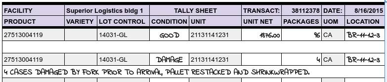

Receiving Procedures¶
Receiving goods in a warehouse involves a sequence of steps which should be recorded in the warehouse logs and information system. Failing to perform these steps in record keeping will result in information errors, inventory mistakes, billing omissions, and in some cases, liability for the cost of entire loads. It is not an exageration to say that bad receiving practices constitute negligence on the part of a warehouse operator. To avoid receiving problems and corresponding liabilities, follow the steps in this article.
Maintain a Yard Log¶
Check in each incoming and outgoing vehicle with a yard log which includes:
- Carrier – The SCAC or other identifier of the vehicle’s owner.
- Vehicle – One or more identifiers for the vehicle and driver.
- Purpose – An indicator of (R) Receiving or (S) Shipping purpose.
- Location – The dock door location assigned for loading or unloading.
- Account – The customer account for the visit.
- Transaction – The assigned receipt or shipment sequence number.
Additionally, activity dates and times should be recorded:
- Arrived – When the vehicle is admitted to the yard.
- Scheduled – When loading/unloading is scheduled to begin.
- Starting – The time when the warehoue and vehicle doors are opened.
- Ending – The time when the vehicle doors are closed.
- Departed – When the truck leaves the facility yard.
Transaction documents share some information with the Yard Log, of course. But if a receipt is posted without a corresponding yard log entry, or if a truck is unloaded without entering a receipt, then a serious error has occurred.

Use a Receiving Tally¶
As a standing procedure, the paperwork for a load should go directly to the receiving clerk when a vehicle arrives. Dock and vehicle doors should not be opened until the paperwork is entered in the information system and a receiving tally is prepared. This tally form should list the products and units to be received, but with blanks for the quantities and locations. The following graphic shows part of a receiving tally where the blanks have been hand-filled.
Photographic Evidence¶
Inspect the contents of a vehicle immediately once the doors are open. If goods have shifted in transit or there is any other reason to suspect damage, photograph the load in place. (Some warehousers photograph every load no matter what.) If a condition issue is discovered while unloading, as in the tally sheet above, stop and document the situation with photographs.
When stripping containers, unload, lump, and segregate the products onto pallets and prepare a tally of exact counts per pallet unit. When unloading palletized product, count the top tier on each pallet to verify that the extended count for the pallet is correct. Remember. not every driver is sober and honest.
Locate Products in Storage¶
As a general rule, received products should be put away in the front third (the “A” section) of the warehouse. Goods which overstay their welcome there should be rewarehoused periodically to keep space available. If possible, products should be segregated by account. Hazardous material must be stored in areas separated from general storage by bulkhead walls. Food products must be stored away from walls and surrounded with a painted clean zone, among other requirements.
Knowing that there are rules for storage, the warehouse should be zoned and the correct zone for storing a product should be checked before putting the goods away.
Verify Receiving From Tally¶
When a tally is complete, it should go directly to the receiving clerk for checking and updating. The clerk should check the following:
- Hash total of number of received units is correct.
- Hash total of content (cases, boxes, cartons, etc.) matches.
- Condition of goods is noted correctly.
- Storage zone and location is appropriate for warehouse, account, and product.
The following items must be entered to complete the receiving process.
- The storage location of each lot or unit must be updated.
- Add separate line entries for goods with non-conforming conditions.
- Add accessorial charges for any exceptional services.
In the receiving tally shown previously, a separate line entry is required for the damaged cases. Damaged cases are stored with the original pallet, but the pallet requires hand restacking to place the damaged cases on the top tier. This entails three charges: one for hand stacking, another for shrinkwrap, and a third charge for mixed pallet tracking.
End-of-Day Reconciliation¶
At the end of each day, warehouse clerical personnel must verify that the line count of inbound vehicles on the yard log matches the number of entered receipts and receiving tallies.
Then standard receiving charges for storage and handling should be calculated for receipts. A daily charges log for receipts should be printed and checked for errors. A billing error, such as a receipt with $25,000.00 in charges, is likely due to an overlooked entry error. Fix any errors immediately. A sample Charges Log report is illustrated following.

Note
Handling (1H) charges are by unit, while Storage (1S) charges are by net hundredweight. The product is paper rolls, as shown at Unit Weights and Measures.
Issuing Warehouse Receipts¶
Once billing is calculated and checked, Warehouse Receipt documents should be printed, signed by the warehouse manager, and issued to the customer. Receipts may be issued either as invoices or just as documents to be invoiced later, as the customer prefers.
Failure to issue warehouse receipts is negligence on the warehouser’s part. Warehouse Receipts satisfy the following business needs:
- The Receipt establishes the warehouse’s lien for services, allowing the warehouse to require payment before releasing goods from bailment. For this to be effective, the rates for storage and handling must be printed.
- The Warehouse Receipt document includes contractual terms which are enforced based on the customer’s deposit of goods and acceptance of the receipt. This requires that the contract terms backer be a part of the receipt document.
- The Receipt establishes a limitation of warehouse liability for negligence. This limitation is based on the liability limitation from the warehouse setup, or a separate declaration of value on the account setup.
- The Warehouse Receipt notifies the customer of the location, conditions and standard of care for his goods.
Industry Contract Terms¶
There are several trade associations for public warehousing, the principal ones being the International Association of Refrigerated Warehouses (IARW) and the International Warehousing and Logistics Association (IWLA). These groups have promulgated standard contract terms for members to use. Familiarity with these terms is expected of corporate logistics personnel, so warehousers who adopt these standard terms can conduct business without recourse to expensive, and frequently faulty, legal representation.
Versions of these Standard Terms are posted here for reference:
INTERNATIONAL REFRIGERATED WAREHOUSE CONTRACT TERMS AND CONDITIONS
STANDARD CONTRACT TERMS AND CONDITIONS FOR MERCHANDISE WAREHOUSEMEN
Warning
Disclaimer: AAltsys Technology displays these terms as example documents commonly used in public commerce. AAltsys is not qualified to judge the accuracy, usability, or legal virtue of these terms (and we are certainly not responsible for the sexist nature of their language). The presentation of these terms does not constitute permission to use the same without authorization from the sponsoring organizations.